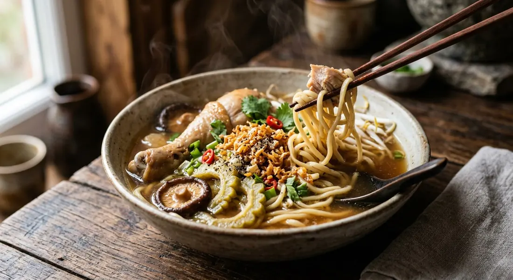

Chicken broth over rice or egg noodles — clear and shredded in one school, braised with bitter gourd in the other, and finished everywhere with a scatter of fried garlic.

ก๋วยเตี๋ยวไก่ means exactly what it does — chicken (ไก่) noodles (ก๋วยเตี๋ยว) — and it is the workhorse of the Thai noodle stall. Under one name sit two big families. The first is the clear-soup version: a pale broth built on chicken bones, coriander root, garlic and pepper, with a poached breast lifted out and shredded. The second is the stewed version, ก๋วยเตี๋ยวไก่ตุ๋น: drumsticks braised in a sweet-soy, Chinese-herb broth, very often with bitter gourd — ก๋วยเตี๋ยวไก่ตุ๋นมะระ — the version Wongnai chose for its free recipe, and the one used here. Kapook's roundup makes the point that one broth serves three ways: clear soup, dry, or stirred into tom yum at the bowl.
The broth is where the craft lives, and every source agrees on the trinity: coriander root, garlic, white pepper. Kapook's shop recipe pounds them together, fries them low with oil, then toasts star anise, cinnamon, bay and galangal into the paste before the drumsticks ever go in; Wongnai's home version skips the herbs entirely and lets garlic and pepper do the work. Kapook's street version adds the stall-owner's signature — pickled garlic and its brine, three heads and half a cup, for a sweet-sour depth no sugar alone can fake. And the clarity rules are non-negotiable: Kapook's home cook skims the scum until the surface is clear, and TrueID's ancient recipe goes further — the lowest flame you have, 90 minutes per 2 kilos of chicken, and do not stir, or the broth clouds and the breast turns tough.
Then there is the bitter gourd. The stewed version is famous for mara — bitterness against sweet-salty broth — and every source handles it differently: Wongnai salts it for twenty minutes before it meets the pot, Kapook boils it separately in salted water, and Phol Food Mafia's chef drops it straight in with chicken blood and pandan. Whatever the route, the finish is identical everywhere: fried garlic (กระเทียมเจียว), the garnish no Thai chicken noodle leaves home without, plus coriander, spring onion, and the condiment caddy — sugar, chilli flakes, fish sauce and vinegar — on the table.
| Thai | English | Amount |
|---|---|---|
| น่องไก่ | Chicken drumsticks | 1 kg |
| มะระ | Bitter gourd | ½ fruit |
| บะหมี่ | Egg noodles | 5 blocks |
| เห็ดหอมแช่น้ำ | Shiitake, soaked | 5 |
| ถั่วงอก | Bean sprouts | 500 g |
| รากผักชี | Coriander roots | 2 |
| กระเทียม | Garlic | 1 head |
| พริกไทยดำเม็ด | Black peppercorns | 1 tbsp |
| เกลือ | Salt | 1 tsp |
| น้ำตาลกรวด | Rock sugar | 2 tbsp |
| ซอสหอยนางรม | Oyster sauce | 2 tbsp |
| น้ำปลา | Fish sauce | 2 tbsp |
| ซีอิ๊วขาว | Light soy sauce | 2 tbsp |
| ซีอิ๊วดำ | Dark soy sauce | 2 tbsp |
| น้ำเปล่า | Water | 2 L |
| กระเทียมเจียว | Fried garlic | to serve |
| ผักชี ต้นหอม | Coriander, spring onion | to serve |
The clear-soup school (Kapook, home): 5 litres of water with 10 coriander roots, star anise and cinnamon, seasoned with sugar, white and dark soy and salt, then ½ kg of chicken carcass — skimmed until clear — and a ½ kg breast poached in it for 30 minutes and shredded. The shop batch (Kapook): 8 litres of soup built on the drumstick braising liquid plus two more carcasses, onions, pickled garlic and its brine. The chef's one-pot (Phol Food Mafia, เชฟธนากร): 2 litres of water, drumsticks, thighs and 300 g of chicken feet, a Chinese spice sachet, galangal, cinnamon, star anise, pandan, and 180 g each of bitter gourd and chicken blood — braised one hour. The ancient pot (TrueID): 4.5 litres per 2 kilos of chicken with daikon, small-clove garlic and coriander roots — lowest heat, 90 minutes, never stirred.
Egg or rice noodles. Wongnai's home recipe and Kapook's shop batch use egg noodles (บะหมี่); Phol Food Mafia and Kapook's tom yum version use rice noodles (เส้นเล็ก); Kapook's home cook cheerfully uses instant noodles. The broth doesn't care.
Two schools. Kapook's clear-soup recipes poach a breast in a carcass broth and shred it; Wongnai, Phol and TrueID braise legs and drumsticks in a seasoned pot. Same dish name, two different bowls.
The Chinese herbs. Wongnai's home recipe and TrueID's ancient pot use none — garlic, pepper, coriander root only. Wongnai's home cook ช่างกบ bundles the full medicine cabinet: cinnamon, star anise, fennel seed, yuzhu, goji and a spoon of Chinese wine. Phol's chef adds pandan and chicken feet; Kapook's shop version sits between with star anise, cinnamon, bay and galangal.
Pickled garlic. Kapook's two recipes stir in pickled garlic and its brine — three heads and half a cup in the shop batch — for the sweet-sour stall note. Every other source skips it and lets sugar do the work.
The bitter gourd. Four treatments for one vegetable: salt it 20 minutes raw (Wongnai), boil it separately in salted water (Kapook shop), salt it 30 minutes then simmer it in the pot (ช่างกบ), or drop it straight in with the blood and pandan (Phol). Kapook's home cook adds a warning: stew extra mara in a separate pot, or the whole broth turns bitter.
Chicken blood. Phol Food Mafia and ช่างกบ put เลือดไก่ in the pot — 180 g and one block respectively — and no other source mentions it. A shop extra, not a home staple.
The sugar. Rock sugar (Wongnai, Kapook tom yum), coconut sugar (Kapook shop), palm sugar (Phol, ช่างกบ), plain white sugar (Kapook home). All agree it must be there; none agrees which one.
This recipe is translated from the following Thai-language sources. Where they disagree, we've said so.
1. Wongnai — "แจกสูตรฟรี 'ก๋วยเตี๋ยวไก่ตุ๋นมะระ' ไก่ตุ๋นรสเด็ด สร้างงานสร้างอาชีพ!" (the recipe used here) — wongnai.com
2. Kapook — "8 วิธีทำก๋วยเตี๋ยวไก่ จานอร่อยไม่มีเบื่อเอาใจคนกินเส้น" (the shop batch with pickled garlic) — cooking.kapook.com
3. Kapook Creator — "ก๋วยเตี๋ยวไก่ฉีก เมนูเส้นอิ่มท้องพร้อมเคล็ดลับน้ำซุปใส" by โบว์ (the clear-soup home version and the skimming trick) — creator.kapook.com
4. Kapook — "ก๋วยเตี๋ยวไก่ฉีกต้มยำ เมนูเส้นอิ่มท้องน้ำซุปหอมกลมกล่อม" (one broth, three ways) — cooking.kapook.com
5. Wongnai (home cook ช่างกบ) — "ก๋วยเตี๋ยวไก่ตุ๋นมะระ" (the full herb-sachet and Chinese-wine version) — wongnai.com
6. Phol Food Mafia — "Noodles with Braised Chicken (ก๋วยเตี๋ยวไก่ตุ๋น)", สูตรโดย เชฟ ธนากร พลอยสีชมพู (the chef's one-pot with pandan and chicken blood) — pholfoodmafia.com
7. TrueID — "แจกสูตร วิธีทําก๋วยเตี๋ยวไก่ตุ๋น ง่ายๆ ด้วย สูตรก๋วยเตี๋ยวไก่ตุ๋นโบราณ ไก่ฉีกไม่แข็ง" (the ancient low-heat, no-stirring method) — food.trueid.net